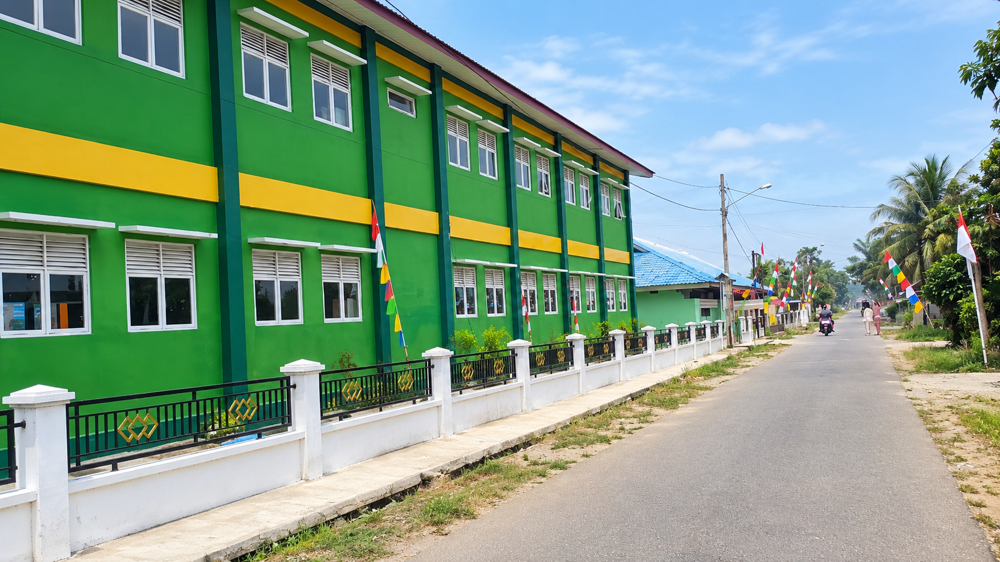

Mengenal Desa Semparuk
Menelusuri kehidupan, lingkungan, dan kebersamaan masyarakat Desa Semparuk.

Sekilas tentang Desa Semparuk
Desa Semparuk merupakan bagian dari Kecamatan Semparuk, Kabupaten Sambas, yang memiliki kehidupan masyarakat yang dekat dengan lingkungan dan budaya setempat.
Suasana pedesaan yang tenang, lingkungan yang asri, serta semangat kebersamaan menjadi bagian dari kehidupan masyarakat sehari-hari.
Tumbuh Bersama, Menjaga Desa
Menjaga lingkungan, memperkuat kebersamaan, dan mengenalkan potensi Desa Semparuk.
Lingkungan Terjaga
Menjaga kebersihan dan kelestarian lingkungan desa.
Kebersamaan Masyarakat
Mempererat hubungan melalui gotong royong dan kegiatan bersama.
Potensi Lokal
Memperkenalkan keindahan, kehidupan, dan potensi Desa Semparuk.